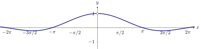
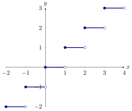
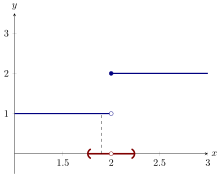
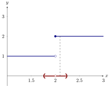
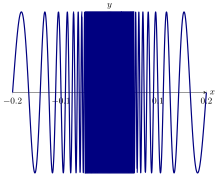
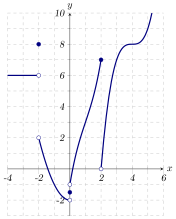

The basic idea
Consider the function While is undefined at , we can still plot at other values near .

Use the graph of above to answer the following question: What is ?
is undefined
it is impossible to say
Nevertheless, we can see that as approaches zero, approaches one. From this setting
we come to our definition of a limit.
Intuitively,
the limit of as approaches is ,
written if the value of can be made as close as one wishes to for all sufficiently
close, but not equal to, .
Use the graph of above to finish the following statement: “A good guess is that…”
Consider the following graph of
Use the graph to evaluate the following. Write DNE if the value does not
exist.
-
(a)
-
-
(b)
-
-
(c)
-
-
(d)
-
-
(e)
-
-
(f)
-
-
(g)
-
-
(h)
Limits might not exist
Limits might not exist. Let’s see how this happens.
Consider the graph of .

Explain why the limit does not exist.
The function is the function that
returns the greatest integer less than or equal to . Recall that if can be
made arbitrarily close to by making sufficiently close, but not equal to, .
So let’s examine near, but not equal to, . Now the question is: What is
?
If this limit exists, then we should be able to look sufficiently close, but
not at, , and see that is approaching some number. Let’s look at a graph:

If we look closer and closer to (on the left of ) we see that . However, if we look
closer and closer to (on the right of ) we see

So just to the right of , . We cannot find a single number that approaches as
approaches , and so the limit does not exists.
Tables can be used to help guess limits, but one must be careful.
Consider . Fill in the tables below: What do the tables tell us about
it is
unclear what the tables are telling us about the limit
Neither tables nor graphs can ever tell us for certain what a limit is. However,
sometimes they can help “guess” the limit. In this case the graph of is somewhat
more helpful:

We see that oscillates “wildly” as approaches , and hence does not approach any
one number.
One-sided limits
While we have seen that does not exist, more can still be said.
Intuitively,
the limit from the right of as approaches is ,
written if the value of can be made as close as one wishes to for all sufficiently
close, but not equal to, .
Similarly,
the limit from the left of as approaches is ,
written if the value of can be made as close as one wishes to for all sufficiently
close, but not equal to, .
Compute: by using the graph below
From the graph we can see that as approaches from the left, remains at up until
the exact point that . Hence Also from the graph we can see that as approaches
from the right, remains at up to . Hence
When you put this all together
One-sided limits help us talk about limits.
A limit exists if and only if
In this case, is equal to the common value of the two one sided limits.
Evaluate the expressions by referencing the graph below. Write DNE if the limit
does not exist.

-
(a)
-
-
(b)
-
-
(c)
-
-
(d)
-
-
(e)
-
-
(f)
-
-
(g)
-
-
(h)
-
-
(i)
-
-
(j)
-
-
(k)
-
-
(l)